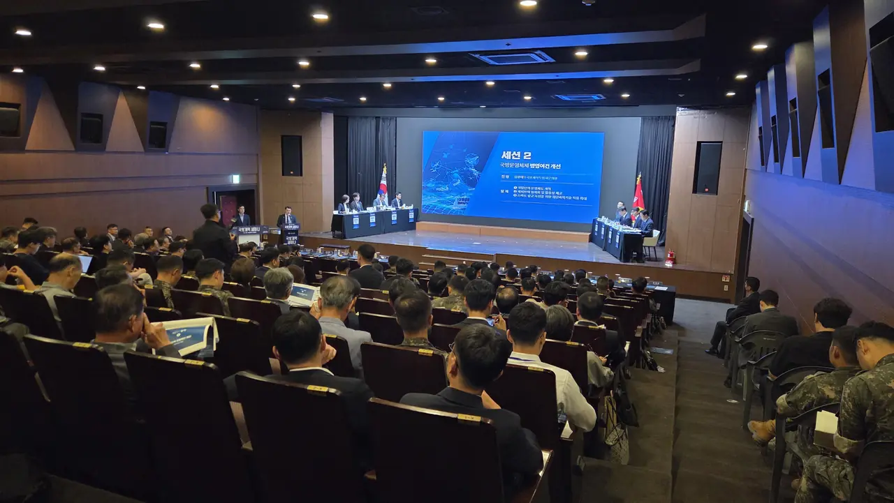
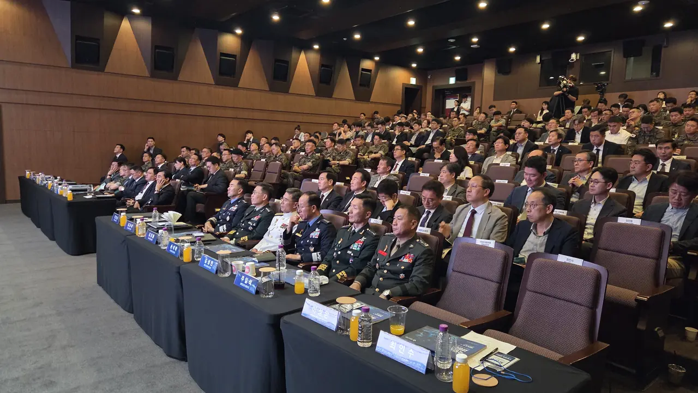

현장 운영 · 2026년 11월 17일
VIP 의전 기본 동선 좌석 호칭 수행 순서 정리
VIP 의전의 기본은 도착부터 퇴장까지의 순서를 미리 정해 두고, 그 순서를 담당자와 의전 인력이 같게 알고 있는 것입니다. 주요 인사는 예정보다 일찍 오거나 늦게 올 수 있고, 현장에서 판단할 시간이 거의 없습니다. 이 글은 동선, 좌석, 호칭, 수행 순서를 단계별로 정리해 행사 담당자가 사전에 맞출 항목을 알려 드립니다.

- 의전은 도착부터 퇴장까지 한 줄로 이어지는 순서표가 기본이다
- 동선과 좌석은 도면 위에 직접 표시하고 현장에서 한 번 걸어 본다
- 호칭과 소개 순서는 주최 쪽이 정한 대로 사전에 공유한다
- 예정과 달라지는 상황의 연락 방법과 대안을 정해 둔다
VIP 의전이란
VIP 의전은 행사에 참석하는 주요 인사를 정해진 순서와 예의에 맞춰 맞이하고 안내하고 배웅하는 일입니다. 지노컴퍼니의 인력 유형에도 VIP 의전(주요 인사 의전 · 수행)이 있습니다. 행사 성격에 따라 의전의 범위와 격식이 달라지므로, 먼저 주최 쪽이 어디까지를 의전으로 보는지 정하는 것이 출발점입니다.
의전이 어려운 이유는 예외가 자주 생기기 때문입니다. 도착 시간이 달라지고, 동행자가 늘고, 일정이 바뀝니다. 그래서 좋은 의전 준비는 정해진 순서를 지키는 데서 끝나지 않고, 순서가 흔들릴 때 어떻게 할지까지 미리 정해 두는 것입니다.

도착부터 퇴장까지 순서표
아래 표는 의전 순서표의 기본 틀입니다. 행사마다 칸을 더하거나 뺄 수 있습니다.
| 단계 | 확인할 것 | 담당 인력 |
|---|---|---|
| 도착 전 | 도착 예정 시간, 차량 정차 위치, 동행자 확인 | 현관 담당과 현장 책임자 |
| 맞이 | 맞이하는 위치, 인사 순서, 명찰 또는 안내 방식 | 맞이 담당 |
| 이동 | 엘리베이터와 통로, 대기 장소, 이동 순서 | 수행 담당 |
| 입장과 착석 | 입장 순서, 좌석 위치, 자리 안내 방식 | 좌석 안내 담당 |
| 행사 중 | 인사말과 소개 순서, 사진 촬영 구간 | 수행 담당과 무대 담당 |
| 퇴장 | 배웅 위치, 차량 호출, 동선 확보 | 수행 담당과 현관 담당 |
표를 만든 뒤에는 현장에서 한 번 걸어 보는 것이 중요합니다. 도면상 문제가 없어 보여도 실제로는 문 폭이 좁거나 엘리베이터 대기가 길 수 있습니다.
좌석과 동선
좌석은 주최 쪽이 정한 순서를 그대로 따르는 것이 기본입니다. 인력은 판단하지 않고 안내합니다. 좌석표를 출력해 의전 담당과 좌석 안내 담당이 같은 표를 들고 있도록 하고, 좌석이 바뀌면 그 자리에서 즉시 공유합니다.
- 주요 인사의 이동 동선과 일반 참석자 동선이 겹치지 않는지 확인합니다.
- 대기 장소가 필요하면 위치와 안내 방법을 정합니다.
- 좌석 근처에 필요한 것(물, 자료, 명패)을 미리 확인합니다.
- 무대에 오르는 계단이나 단차가 있으면 안전하게 안내할 방법을 정합니다.

호칭과 소개 순서
호칭은 주최 쪽이 정한 방식 그대로 씁니다. 직함이 여러 개이거나 최근 바뀐 경우에는 어느 것을 쓸지 담당자에게 확인해야 합니다. 인력이 임의로 판단해서 부르면 실례가 되기 쉽습니다.
소개 순서도 마찬가지입니다. 무대에서 소개하는 순서와 안내 자료에 적는 순서가 다르면 현장이 혼란스러워집니다. 소개 순서표를 한 장으로 만들어 사회자와 의전 담당, 현장 책임자가 같은 문서를 보게 하세요.
예정이 달라질 때
- 도착이 빨라지면: 대기 장소와 맞이 담당 위치를 미리 정해 둡니다.
- 도착이 늦어지면: 행사 진행과 의전 담당의 연락 방법을 정합니다.
- 동행자가 늘면: 좌석과 대기 장소를 추가로 확보할 방법을 정합니다.
- 일정이 바뀌면: 현장 책임자에게 보고하고 순서를 바꿔 공유합니다.
지노컴퍼니는 맞춤 컨설팅에서 인력 구성 제안과 역할 · 배치 계획, 행사장 동선 · 고객 응대 전략, 위기 상황 대응 매뉴얼을 함께 다룹니다. 의전이 포함된 행사라면 인력 서비스에서 VIP 의전 인력 유형을 확인하고 견적 문의로 행사 개요를 알려 주세요.
자주 묻는 질문
의전 인력은 어떤 점이 일반 안내 요원과 다른가요?
주요 인사를 가까이서 수행하고 순서를 관리하는 역할이라 응대 태도와 상황 판단이 더 중요합니다. 지노컴퍼니는 의전 교육도 인력 교육 항목에 포함합니다.
의전 순서표는 누가 만드나요?
행사 개요와 원하는 격식은 주최 쪽이 정하고, 순서 구성과 인력 배치는 에이전시와 함께 정리하는 경우가 많습니다. 최종 확인은 행사 전 점검 미팅에서 합니다.
예행연습이 필요한가요?
필요합니다. 동선과 좌석, 이동 시간을 현장에서 실제로 걸어 보는 것이 가장 확실한 점검입니다. 가능하면 행사장 상태가 갖춰진 시점에 한 번 확인하세요.